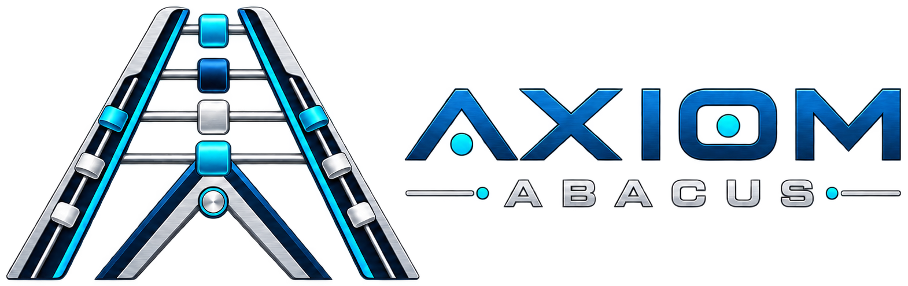

Market Intelligence
Compute indexes, availability surfaces, normalized pricing, utilization and forward curves.
Compute Market
Axiom Compute Load
Physical capacity marketplace, workload matching, energy-aware scheduling and dispatch.
Veritris Axiom connects energy operations, compute capacity, market intelligence, trading, dispatch, risk and settlement in one intelligent control plane.
Axiom treats a data center as more than electrical load. It models energy input, compute capacity, workload constraints and market value as a connected operating system.
Axiom Abacus standardizes availability, price, utilization and forward-market intelligence across GPU capacity.
Axiom Compute Load matches workloads to capacity and determines when to run, shift, migrate or curtail.
Axiom Exchange brings provider inventory, market feeds, grid signals, APIs and transactions into one fabric.
Axiom ETRM manages positions, hedges, exposure, counterparty risk, physical scheduling and settlement across energy and compute.

Abacus is the market-intelligence and benchmark layer for the compute economy—designed as a living market surface, not a dashboard full of static tiles.
Abacus turns fragmented capacity into a normalized language for availability, pricing, utilization and forward expectations.
A physical marketplace and dispatch layer for GPU capacity and flexible AI workloads. Compute Load evaluates market value across energy, infrastructure and workload constraints before deciding where and when compute should run.
Power price · congestion · grid conditions · demand response
Match · price · schedule · dispatch · optimize
GPU · location · network · SLA · time · availability
The established Axiom modules remain intact; compute-market capabilities extend the same operating system rather than becoming a separate platform.
Compute indexes, availability surfaces, normalized pricing, utilization and forward curves.
Physical capacity marketplace, workload matching, energy-aware scheduling and dispatch.
Positions, trading, exposure, hedging, physical scheduling, risk and settlement across energy and compute.
API-first transaction and integration layer connecting market data, providers, partners and internal workflows.
Grid assets, territories, constraints, work queues and network health.
Energy market positions, suppliers, pricing, settlements and wholesale workflows.
Load, weather, usage, price and operating-scenario forecasting.
Solar, storage, flexible load, microgrids and distributed energy resources.
Enrollment, plans, billing operations, customer care and digital energy experiences.
Risk modeling, outage response and critical-infrastructure continuity.
Axiom ETRM can treat compute capacity as a market exposure connected directly to electricity cost, location, utilization and operational flexibility.